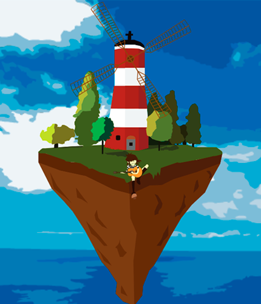
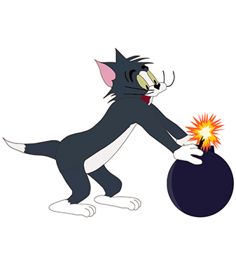
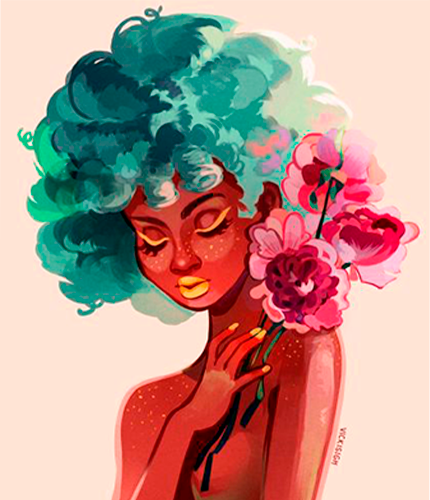

1. Semester
Her kan du se nogle af de animationer jeg har lavet. Den flyvende ø og damen er lavet i Adobe Animate, og Tom er kodet i HTML og CSS. Tryk på billederne for at se animationerne.
  
Her kan du se nogle af de animationer jeg har lavet. Den flyvende ø og damen er lavet i Adobe Animate, og Tom er kodet i HTML og CSS. Tryk på billederne for at se animationerne.